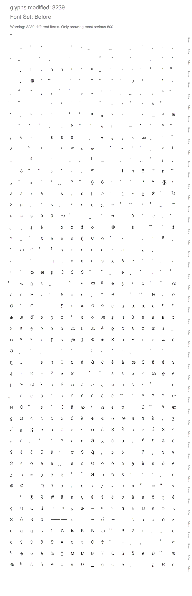
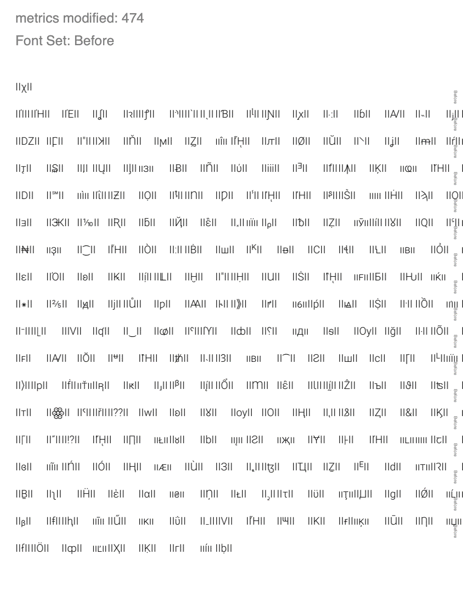
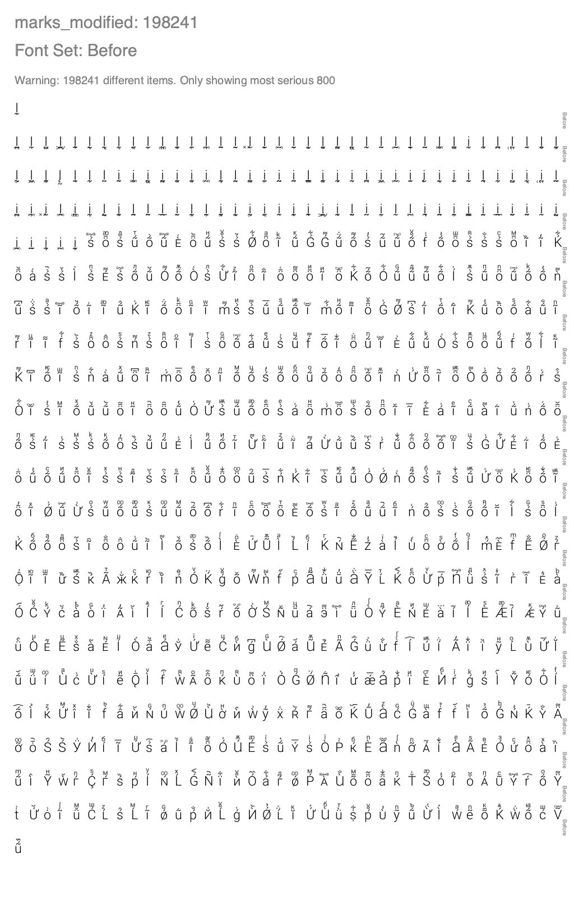
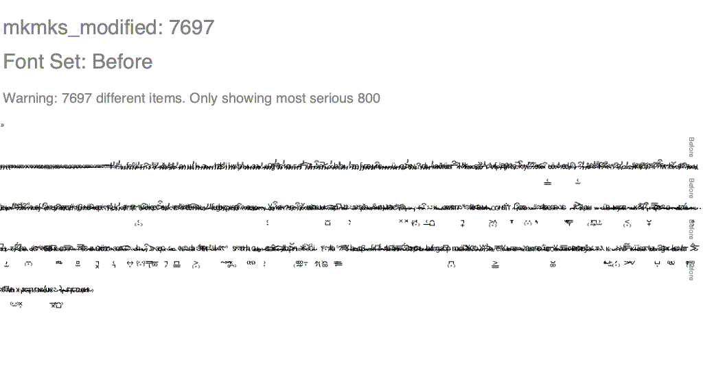

Diffenator
Displaying the 20 most significant items in each table. To increase use the '-ol' flag
names new: 2
| id | string |
|---|
| (294, 3, 1, 1033) | Condensed |
| (295, 3, 1, 1033) | Normal |
names missing: 2
| id | string |
|---|
| (16, 3, 1, 1033) | Roboto |
| (17, 3, 1, 1033) | Light |
names modified: 5
| id | string_a | string_b |
|---|
| (1, 3, 1, 1033) | Roboto Light | Roboto |
| (3, 3, 1, 1033) | Google:Roboto Light:2017 | Google:Roboto:2020 |
| (4, 3, 1, 1033) | Roboto Light | Roboto |
| (5, 3, 1, 1033) | Version 2.138; 2017 | Version 3.0; 2020 |
| (6, 3, 1, 1033) | Roboto-Light | Roboto-Regular |
attribs modified: 3
| table | attrib | value_a | value_b |
|---|
| head | xMin | -1732 | -1825 |
| head | modified | 2017/05/26 10:21:31 | 2020/05/28 20:00:45 |
| head | fontRevision | 2.13800048828125 | 3.0 |
glyphs modified: 3239
| glyph | diff | string |
|---|
| uni02ED | 1.0 | ˭ |
| uni0307 | 1.0 | ̇ |
| uni208C | 1.0 | ₌ |
| uni1D35 | 1.0 | ᴵ |
| uni207C | 1.0 | ⁼ |
| uniA71F | 0.8846 | ꜟ |
| uniA71E | 0.8846 | ꜞ |
| uniA71D | 0.8462 | ꜝ |
| uni2027 | 0.8333 | ‧ |
| uni1AB5 | 0.8333 | ᪵ |
| uni033E | 0.8095 | ̾ |
| uni1AB6 | 0.8039 | ᪶ |
| anoteleia | 0.7778 | · |
| uni0330 | 0.7778 | ̰ |
| dotaccent | 0.7778 | ˙ |
| period | 0.7778 | . |
| periodcentered | 0.7778 | · |
| onedotenleader | 0.7778 | ․ |
| uni2E33 | 0.7778 | ⸳ |
| uni032B | 0.7778 | ̫ |

metrics modified: 474
| glyph | diff_adv |
|---|
| chi | 60.0 |
| Iotatonos | 50.0 |
| Etatonos | 50.0 |
| Epsilontonos | 50.0 |
| uni0286 | 1.0 |
| uniA75B | 1.0 |
| uniA76D | 1.0 |
| uni2E05 | 1.0 |
| uni02CB | 1.0 |
| uni02CE | 1.0 |
| uni0181 | 1.0 |
| uni1DA9 | 1.0 |
| uni019D | 1.0 |
| uniAB59 | 1.0 |
| uni2056 | 1.0 |
| uni0253 | 1.0 |
| uniA738 | 1.0 |
| uni02F5 | 1.0 |
| uni2C7C | 1.0 |
| uniA682 | 1.0 |

marks_modified: 198241
| base_glyph | mark_glyph | diff_x | diff_y |
|---|
| uni1E2C | uni031C | 1.0 | -396.0 |
| uni1E2C | uni034D | 1.0 | -395.0 |
| uni1E2C | uni0339 | 1.0 | -395.0 |
| uni1E2C | uni033A | 1.0 | -395.0 |
| uni1E2C | uni1DFF | 1.0 | -395.0 |
| uni1E2C | uni031E | 1.0 | -395.0 |
| uni1E2C | uni1DCF | 1.0 | -395.0 |
| uni1E2C | uni1AB7 | 1.0 | -395.0 |
| uni1E2C | uni0345 | 1.0 | -395.0 |
| uni1E2C | uni0354 | 1.0 | -395.0 |
| uni1E2C | uni0326 | 1.0 | -395.0 |
| uni1E2C | glyph02200 | 1.0 | -395.0 |
| uni1E2C | uni0348 | 1.0 | -395.0 |
| uni1E2C | uni1DCA | 1.0 | -395.0 |
| uni1E2C | glyph02195 | 1.0 | -395.0 |
| uni1E2C | uni033C | 1.0 | -395.0 |
| uni1E2C | uni0320 | 1.0 | -395.0 |
| uni1E2C | uni1AB5 | 1.0 | -395.0 |
| uni1E2C | uni0319 | 1.0 | -395.0 |
| uni1E2C | glyph02192 | 1.0 | -395.0 |

mkmks_modified: 7697
| base_glyph | mark_glyph | diff_x | diff_y |
|---|
| uni1ABC | uni0312 | -47.0 | 368.0 |
| uni1ABB | uni0312 | -47.0 | 368.0 |
| uni1ABB | uni0313 | -19.0 | 368.0 |
| uni1ABC | uni0313 | -19.0 | 368.0 |
| uni1ABC | uni0314 | 17.0 | 368.0 |
| uni1ABB | uni0314 | 17.0 | 368.0 |
| uni1ABB | hookabovecomb | -73.0 | 259.0 |
| uni1ABC | hookabovecomb | -73.0 | 259.0 |
| uni1ABC | uni030F | 141.0 | 186.0 |
| uni1ABB | uni030F | 141.0 | 186.0 |
| uni1ABB | acutecomb | -100.0 | 195.0 |
| uni1ABC | acutecomb | -100.0 | 195.0 |
| uni1ABB | gravecomb | 96.0 | 195.0 |
| uni1ABC | gravecomb | 96.0 | 195.0 |
| uni1ABB | uni030B | -67.0 | 223.0 |
| uni1ABC | uni030B | -67.0 | 223.0 |
| uni1ABB | uni0310 | 0.0 | 288.0 |
| uni1ABC | uni0310 | 0.0 | 288.0 |
| uni1ABB | uni030D | -1.0 | 278.0 |
| uni1ABB | uni030E | 1.0 | 278.0 |
